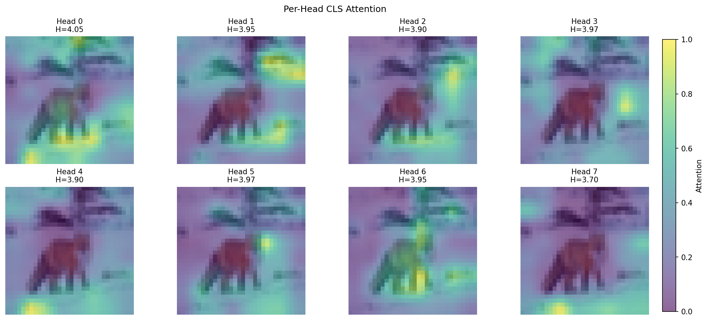
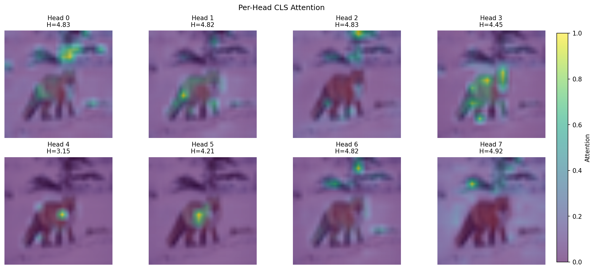

Reproducing LeJEPA on CIFAR-100 with ViT-Tiny — SIGReg prevents collapse without contrastive samples, but we discovered an interesting head collapse phenomenon in nano-scale models. Reproducing LeJEPA on CIFAR-100 with ViT-Tiny — SIGReg prevents collapse without contrastive samples, but we discovered an interesting head collapse phenomenon in nano-scale models.
LeJEPA [Balestriero]Balestriero & LeCun "LeJEPA: Provable and Scalable Self-Supervised Learning Without the Heuristics" (arXiv 2025) proposes a theoretically provable regularization term (SIGReg) to prevent joint embedding collapse. We reproduced this method on CIFAR-100 with ViT-Tiny.
LeJEPA [Balestriero]Balestriero & LeCun "LeJEPA: Provable and Scalable Self-Supervised Learning Without the Heuristics" (arXiv 2025) 提出了一个理论上可证明的 regularization term (SIGReg) 来防止 joint embedding 的 collapse。我们在 CIFAR-100 上用 ViT-Tiny 复现了这个方法。
1. Background
Joint Embedding vs Generative
Self-supervised learning has two main approaches:
Self-supervised learning 有两条路线：
| Approach | Method | Pros | Cons |
|---|---|---|---|
| Generative | Reconstruct pixels (MAE [He]He et al. "Masked Autoencoders Are Scalable Vision Learners" (CVPR 2022)) | Rich supervision | Wastes capacity on pixel details |
| Joint Embedding | Predict embeddings (JEPA, SimCLR) | Focus on semantics | Risk of collapse |
The core idea of JEPA: instead of reconstructing pixels, make different views of the same image close in embedding space. If the encoder can map different crops to similar embeddings, it has learned invariant semantic features.
JEPA 的核心 idea：不重建 pixels，而是让同一张图的不同 views 在 embedding space 里靠近。如果 encoder 能把不同 crop 映射到相似的 embedding，说明它学到了 invariant 的 semantic features。
The Collapse Problem
The biggest problem with joint embedding is collapse: the model can "cheat" by mapping all inputs to the same point.
Joint embedding 最大的问题是 collapse：模型可以把所有 input 映射到同一个点来 "cheat"。
Common methods to prevent collapse:
常见的防 collapse 方法：
- Contrastive (SimCLR [Chen]Chen et al. "A Simple Framework for Contrastive Learning of Visual Representations" (ICML 2020), MoCo [He]He et al. "Momentum Contrast for Unsupervised Visual Representation Learning" (CVPR 2020)): Use negative samples to push apart embeddings from different images
- Stop-gradient (SimSiam [Chen]Chen & He "Exploring Simple Siamese Representation Learning" (CVPR 2021)): Asymmetric updates to prevent trivial solutions
- EMA (BYOL [Grill]Grill et al. "Bootstrap Your Own Latent: A New Approach to Self-Supervised Learning" (NeurIPS 2020)): Momentum encoder as a stable target
- Contrastive (SimCLR [Chen]Chen et al. "A Simple Framework for Contrastive Learning of Visual Representations" (ICML 2020), MoCo [He]He et al. "Momentum Contrast for Unsupervised Visual Representation Learning" (CVPR 2020)): 用 negative samples 推开不同图的 embeddings
- Stop-gradient (SimSiam [Chen]Chen & He "Exploring Simple Siamese Representation Learning" (CVPR 2021)): 不对称更新，阻止 trivial solution
- EMA (BYOL [Grill]Grill et al. "Bootstrap Your Own Latent: A New Approach to Self-Supervised Learning" (NeurIPS 2020)): momentum encoder 作为稳定的 target
These methods work empirically but lack theoretical guarantees. LeJEPA's SIGReg provides a provably sufficient condition.
这些方法 empirically work，但缺乏理论保证。LeJEPA 的 SIGReg 提供了一个 provably sufficient condition。
2. SIGReg
LeJEPA's loss has two components:
LeJEPA 的 loss 有两部分：
Invariance Loss
Make all views of the same image map to similar embeddings:
让同一张图的所有 views 映射到相似的 embedding：
This is simply the distance from each view to the mean embedding. If representations are truly invariant, different augmentations will map to the same point.
就是每个 view 到 mean embedding 的距离。如果表示真的 invariant，不同 augmentation 会映射到同一点。
SIGReg: Sketched Isotropic Gaussian Regularization
Core insight: if the embedding distribution is isotropic Gaussian , it cannot collapse. Because Gaussian is the "most spread out" distribution.
核心 insight：如果 embedding distribution 是 isotropic Gaussian ，那它不可能 collapse。因为 Gaussian 是 "most spread out" 的分布。
Cramér-Wold Theorem: A distribution is Gaussian if and only if all its 1D projections are Gaussian. So we can test using many random directions:
Cramér-Wold Theorem：一个分布是 Gaussian 当且仅当它的所有 1D projections 都是 Gaussian。所以我们可以用很多 random directions 来测试：
where EP is the Epps-Pulley test, measuring the difference between the 1D distribution and a standard Gaussian.
其中 EP 是 Epps-Pulley test，测量 1D distribution 和 standard Gaussian 的差距。
Why SIGReg Works
| Method | Collapse Prevention | Needs Negatives | Theoretical Guarantee |
|---|---|---|---|
| SimCLR | InfoNCE | Yes | No |
| BYOL | Stop-grad + EMA | No | No |
| VICReg [Bardes]Bardes et al. "VICReg: Variance-Invariance-Covariance Regularization for Self-Supervised Learning" (ICLR 2022) | Variance + Covariance | No | Partial |
| LeJEPA | Gaussianity test | No | Yes |
3. Experiment Setup
Model
| Component | Specification |
|---|---|
| Model | ViT-Tiny (d=512, depth=4, heads=8) |
| Parameters | ~13M |
| Input | 32×32 (native CIFAR) |
| Patch size | 4×4 → 64 tokens (8×8 grid) |
| Position encoding | 2D RoPE (θ=10.0) |
Training
| Hyperparameter | Value |
|---|---|
| Batch size | 256 |
| Learning rate | 5e-4 (cosine → 1e-5) |
| Weight decay | 0.02 |
| Views | 2 global + 8 local |
| λ (SIGReg weight) | 0.05 |
| Training time | ~24h (1× RTX 5090) |
4. Results
Training Curves
Loading training curves...
Linear Probe
Final accuracy: 61.6% on CIFAR-100 (linear probe on frozen embeddings).
Final accuracy: 61.6% on CIFAR-100 (linear probe on frozen embeddings)。
Comparison with LeJEPA paper:
和 LeJEPA paper 的对比：
| Config | Ours | LeJEPA |
|---|---|---|
| Model | ViT-Tiny (~13M) | ViT-Large (304M) |
| Dataset | CIFAR-100 | ImageNet-1K |
| Epochs | ~1,100 | 100 |
| CIFAR-100 Acc | 61.6% | 83.7% |
Note: LeJEPA's 83.7% is from transfer learning (trained on ImageNet, evaluated on CIFAR-100), while ours is directly trained on CIFAR-100.
Note: LeJEPA 的 83.7% 是 transfer learning (在 ImageNet 训练，在 CIFAR-100 eval)，我们是 directly trained on CIFAR-100。
PCA Visualization
Project 512-dim patch embeddings to 3D (RGB) using PCA. Similar colors = similar features.
把 512-dim patch embeddings 用 PCA 投影到 3D (RGB)。Similar colors = similar features。
Both models learned to segment foreground/background. The nano model's coarser patches still capture clear semantic boundaries.
两个模型都学会了 segment foreground/background。Nano model 虽然 patch 更粗，但 semantic boundaries 还是清晰的。
5. Head Collapse: Nano vs Old Model
We compared attention patterns between two setups:
我们对比了两个设置的 attention patterns：
| Config | Nano Model | Old Model |
|---|---|---|
| Image size | 32×32 (native) | 224×224 (7× upscaled) |
| Tokens | 64 (8×8) | 196 (14×14) |
| Position encoding | RoPE | Learned |
Attention Patterns
Nano Model (32×32) — all 8 heads learned nearly identical patterns (avg similarity: 0.756):
Nano Model (32×32) — 8 个 heads 学到了几乎相同的 pattern (avg similarity: 0.756):
Old Model (224×224) — heads are clearly diversified (avg similarity: 0.374):
Old Model (224×224) — heads 明显 diversified (avg similarity: 0.374):
Metrics
| Metric | Nano 32×32 | Old 224×224 |
|---|---|---|
| Entropy | 4.08 | 4.97 |
| Sparsity | 19% | 88% |
| Head Diversity | 0.24 | 0.63 |
| Head Similarity | 0.756 | 0.374 |
Why Head Collapse?
Several possible reasons:
几个可能的原因：
- Information per token: Nano's 4×4 patches have only 16 pixels, while the old model's 16×16 patches have 256 pixels. 16× difference in information, not enough to differentiate.
- Attention budget: 64 tokens give an attention matrix of only 4,096 entries, while 196 tokens give 38,416 entries. More room for heads to specialize.
- Training dynamics: The nano model may collapse to similar patterns early in training and get stuck in a local optimum.
- Information per token: Nano 的 4×4 patch 只有 16 pixels，old model 的 16×16 patch 有 256 pixels。信息量差 16×，不够 differentiate。
- Attention budget: 64 tokens 的 attention matrix 只有 4,096 entries，196 tokens 有 38,416 entries。更多空间让 heads specialize。
- Training dynamics: Nano model 可能 early in training 就 collapse 到 similar patterns，然后 stuck 在 local optimum。
Interesting Finding
Despite head collapse, the nano model has better linear probe accuracy (~61.6% vs ~50%). Possible explanations:
尽管 head collapse，nano model 的 linear probe accuracy 反而更好 (~61.6% vs ~50%)。可能的解释：
- Head diversity is not necessary for good representations
- Upscaling small images may introduce artifacts
- Semantic features at native resolution are more pure
- Head diversity 对 good representations 不是必须的
- Upscaling small images 可能引入 artifacts
- Native resolution 的 semantic features 更 pure
Open question: If we force head diversity (e.g., through regularization), would the nano model improve? Or is the current behavior optimal for low-resolution inputs? Open question: 如果 force head diversity (比如加 regularization)，nano model 会更好吗？还是 current behavior 对 low-resolution 是 optimal 的？
Conclusion
Main findings from this reproduction study:
这个 reproduction study 的主要 findings：
- SIGReg works: Stable training without contrastive samples
- Head collapse: Nano models on low-resolution images exhibit head collapse
- Head collapse ≠ bad representations: Collapsed heads actually have better linear probe accuracy
- Resolution matters: Native resolution vs upscaling significantly affects attention patterns
- SIGReg works: 没有 contrastive samples 也能稳定训练
- Head collapse: Nano models 在 low-resolution images 上会出现 head collapse
- Head collapse ≠ bad representations: Collapsed heads 反而有更好的 linear probe accuracy
- Resolution matters: Native resolution vs upscaling 对 attention patterns 影响很大
References
- Balestriero & LeCun — LeJEPA: Provable and Scalable Self-Supervised Learning Without the Heuristics (arXiv 2025)
- Chen et al. — A Simple Framework for Contrastive Learning of Visual Representations (ICML 2020)
- Chen & He — Exploring Simple Siamese Representation Learning (CVPR 2021)
- Grill et al. — Bootstrap Your Own Latent: A New Approach to Self-Supervised Learning (NeurIPS 2020)
- He et al. — Momentum Contrast for Unsupervised Visual Representation Learning (CVPR 2020)
- He et al. — Masked Autoencoders Are Scalable Vision Learners (CVPR 2022)
- Bardes et al. — VICReg: Variance-Invariance-Covariance Regularization (ICLR 2022)